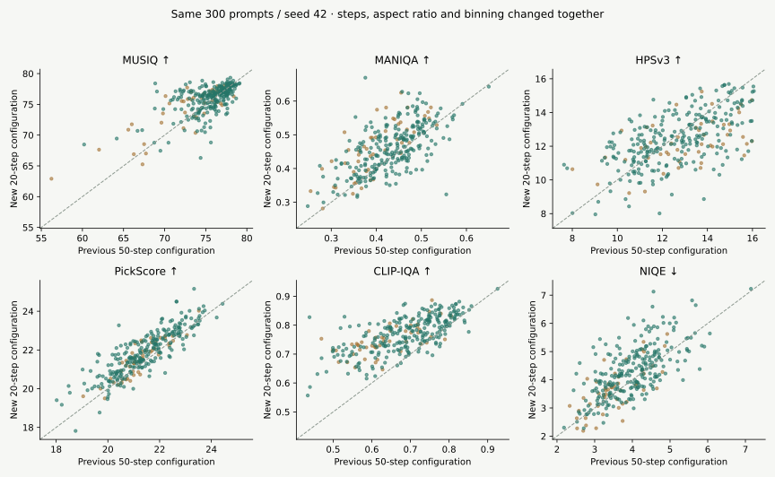
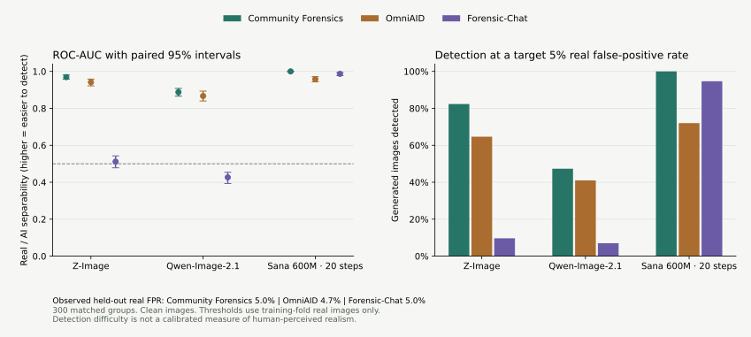

Sana：整套推荐配置带来的变化
旧配置为50步、长边1024的原宽高比、关闭尺寸档位映射；新配置为20步、1024正方形、开启默认映射。提示词、种子与检查点一致。以下是同一组图片的配对比较，不能把变化只归因于步数。
| 指标／方向 | 旧50步配置 | 新20步配置 | 配对差值：新−旧 [95% CI] | 新配置按指标方向胜率 |
|---|---|---|---|---|
| Community Forensics 384 ↑ P(real)×100 | 0.008 | 0.157 | +0.149[+0.054, +0.279] | 80.2% |
| OmniAID ↑ P(real)×100 | 18.945 | 25.065 | +6.120[+4.908, +7.421] | 72.3% |
| Forensic-Chat ↑ P(real)×100 | 76.566 | 45.255 | -31.311[-34.533, -28.104] | 12.8% |
| LongCLIP ↑ | 91.677 | 91.857 | +0.180[-0.086, +0.441] | 52.7% |
| PickScore ↑ | 21.387 | 21.817 | +0.430[+0.365, +0.498] | 76.3% |
| HPS v2.1 ×100 ↑ | 29.626 | 30.668 | +1.042[+0.833, +1.249] | 72.0% |
| HPS v3 ↑ | 12.672 | 12.385 | -0.287[-0.467, -0.113] | 43.3% |
| MUSIQ ↑ | 75.097 | 75.685 | +0.588[+0.313, +0.839] | 56.7% |
| MANIQA ↑ | 0.429 | 0.461 | +0.032[+0.025, +0.038] | 71.3% |
| CLIP-IQA ↑ | 0.682 | 0.766 | +0.085[+0.077, +0.092] | 92.7% |
| NIQE ↓ | 3.930 | 4.209 | +0.280[+0.205, +0.362] | 35.7% |
| BRISQUE ↓ | 13.524 | 2.688 | -10.837[-12.862, -8.796] | 78.3% |
胜率按每项指标的箭头计算，平分计半；检测器P(real)升高只表示该检测器更难识别，不能直接等同于人眼真实感改善。未合并为综合总分。

每点为同一提示词的一对输出。橙色PIQ23，绿色Flickr；虚线表示分数相等，NIQE越低越好。
AI 检测与处理稳定性
AUC越高表示真实图与生成图更容易被区分。检出率和AUC不能单独当作人眼真实感评分。五折阈值只用训练折的真实照片，保留原评分方向。

Community Forensics 384
真实照片误判率：默认阈值 0.3%；以5%为目标校准后的留出实测 5.0%。
| 生成模型 | ROC-AUC [95% CI] | AP | 检出率 @0.5 | 检出率 @约5% FPR |
|---|---|---|---|---|
| Z-Image | 0.969[0.958, 0.981] | 0.972 | 69.3% | 82.3% |
| Qwen-Image-2.1 | 0.888[0.866, 0.908] | 0.886 | 26.3% | 47.3% |
| Sana 600M · 20 步 | 1.000[1.000, 1.000] | 1.000 | 100.0% | 100.0% |
| Sana · 旧50步配置 | 1.000 | 1.000 | 100.0% | 100.0% |
压缩、缩放、模糊后的检测结果
| 处理 | 真实误判率@0.5 | Sana旧 AUC / 检出率 | Sana新 AUC / 检出率 | Z-Image AUC | Qwen AUC |
|---|---|---|---|---|---|
| clean | 0.3% | 1.000 / 100.0% | 1.000 / 100.0% | 0.969 | 0.888 |
| jpeg90 | 0.3% | 1.000 / 100.0% | 1.000 / 99.3% | 0.939 | 0.795 |
| jpeg70 | 0.3% | 1.000 / 98.0% | 0.999 / 94.7% | 0.900 | 0.759 |
| resize512 | 1.0% | 1.000 / 100.0% | 1.000 / 100.0% | 0.973 | 0.907 |
| blur1 | 1.3% | 1.000 / 100.0% | 1.000 / 100.0% | 0.971 | 0.903 |
OmniAID
真实照片误判率：默认阈值 14.3%；以5%为目标校准后的留出实测 4.7%。
| 生成模型 | ROC-AUC [95% CI] | AP | 检出率 @0.5 | 检出率 @约5% FPR |
|---|---|---|---|---|
| Z-Image | 0.942[0.922, 0.958] | 0.929 | 92.3% | 64.7% |
| Qwen-Image-2.1 | 0.867[0.840, 0.894] | 0.844 | 74.3% | 41.0% |
| Sana 600M · 20 步 | 0.958[0.943, 0.972] | 0.947 | 94.3% | 72.0% |
| Sana · 旧50步配置 | 0.979 | 0.974 | 98.0% | 89.7% |
压缩、缩放、模糊后的检测结果
| 处理 | 真实误判率@0.5 | Sana旧 AUC / 检出率 | Sana新 AUC / 检出率 | Z-Image AUC | Qwen AUC |
|---|---|---|---|---|---|
| clean | 14.3% | 0.979 / 98.0% | 0.958 / 94.3% | 0.942 | 0.867 |
| jpeg90 | 10.0% | 0.960 / 89.0% | 0.959 / 90.7% | 0.744 | 0.760 |
| jpeg70 | 7.7% | 0.942 / 79.7% | 0.957 / 88.3% | 0.674 | 0.757 |
| resize512 | 13.3% | 0.976 / 97.3% | 0.941 / 87.0% | 0.930 | 0.843 |
| blur1 | 21.0% | 0.976 / 99.7% | 0.959 / 98.0% | 0.929 | 0.879 |
Forensic-Chat
真实照片误判率：默认阈值 0.3%；以5%为目标校准后的留出实测 5.0%。
| 生成模型 | ROC-AUC [95% CI] | AP | 检出率 @0.5 | 检出率 @约5% FPR |
|---|---|---|---|---|
| Z-Image | 0.511[0.478, 0.543] | 0.547 | 1.3% | 9.7% |
| Qwen-Image-2.1 | 0.427[0.393, 0.454] | 0.489 | 0.7% | 7.0% |
| Sana 600M · 20 步 | 0.987[0.977, 0.994] | 0.983 | 65.7% | 94.7% |
| Sana · 旧50步配置 | 0.888 | 0.901 | 21.7% | 63.7% |
当前四组完整指标
每项均值下方是按来源分层、提示词配对的95% bootstrap区间。四组使用共同提示词；当前Sana尺寸与其他组不同。
检测器 P(real) ×100
| 指标 | 真实摄影 | Z-Image | Qwen-Image-2.1 | Sana 600M · 20 步 | 审计 |
|---|---|---|---|---|---|
| Community Forensics 384 ↑ | 98.66[97.77, 99.37] | 31.51[27.06, 36.13] | 73.02[68.96, 77.01] | 0.16[0.06, 0.29] | 配置 |
| OmniAID ↑ | 69.88[67.90, 71.78] | 28.06[26.43, 29.73] | 39.40[37.43, 41.59] | 25.06[23.55, 26.65] | 配置 |
| Forensic-Chat ↑ | 98.49[97.76, 99.01] | 97.34[96.12, 98.28] | 97.52[96.45, 98.40] | 45.26[42.30, 48.14] | 配置 |
图文一致性
| 指标 | 真实摄影 | Z-Image | Qwen-Image-2.1 | Sana 600M · 20 步 | 审计 |
|---|---|---|---|---|---|
| LongCLIP ↑ | 87.86[87.28, 88.49] | 90.52[90.00, 91.12] | 89.96[89.39, 90.56] | 91.86[91.27, 92.47] | 配置 |
人类偏好预测
| 指标 | 真实摄影 | Z-Image | Qwen-Image-2.1 | Sana 600M · 20 步 | 审计 |
|---|---|---|---|---|---|
| PickScore ↑ | 20.66[20.55, 20.77] | 21.16[21.04, 21.28] | 21.69[21.57, 21.81] | 21.82[21.69, 21.95] | 配置 |
| HPS v2.1 ×100 ↑ | 25.99[25.70, 26.27] | 28.19[27.89, 28.48] | 28.34[28.03, 28.65] | 30.67[30.38, 30.95] | 配置 |
| HPS v3 ↑ | 12.70[12.48, 12.91] | 13.42[13.20, 13.62] | 13.62[13.43, 13.80] | 12.38[12.20, 12.56] | 配置 |
无参考图像质量
| 指标 | 真实摄影 | Z-Image | Qwen-Image-2.1 | Sana 600M · 20 步 | 审计 |
|---|---|---|---|---|---|
| MUSIQ ↑ | 74.53[74.08, 74.93] | 75.01[74.61, 75.39] | 76.57[76.31, 76.84] | 75.68[75.38, 75.95] | 配置 |
| MANIQA ↑ | 0.43[0.42, 0.44] | 0.45[0.44, 0.46] | 0.45[0.45, 0.46] | 0.46[0.45, 0.47] | 配置 |
| CLIP-IQA ↑ | 0.60[0.59, 0.62] | 0.61[0.60, 0.62] | 0.61[0.59, 0.62] | 0.77[0.76, 0.77] | 配置 |
| NIQE ↓ | 3.49[3.41, 3.57] | 3.97[3.89, 4.05] | 4.18[4.10, 4.27] | 4.21[4.11, 4.32] | 配置 |
| BRISQUE ↓ | 10.55[9.09, 12.03] | 10.28[8.93, 11.70] | 11.73[10.51, 13.05] | 2.69[1.10, 4.32] | 配置 |
| LongCLIP归一化余弦 | 真实摄影 | Z-Image | Qwen-Image-2.1 | Sana 600M · 20 步 |
|---|---|---|---|---|
| 均值 | 0.2542 | 0.2615 | 0.2609 | 0.2650 |
模型之间的配对差值与胜率
| 指标 | A−B | 配对均值差 [95% CI] | A按指标方向胜率 |
|---|---|---|---|
| Community Forensics 384 | Z-Image − Qwen-Image-2.1 | -0.415 [-0.464, -0.363] | 14.3% |
| Community Forensics 384 | Z-Image − Sana 600M · 20 步 | +0.314 [+0.269, +0.360] | 95.7% |
| Community Forensics 384 | Qwen-Image-2.1 − Sana 600M · 20 步 | +0.729 [+0.688, +0.768] | 100.0% |
| OmniAID | Z-Image − Qwen-Image-2.1 | -0.113 [-0.137, -0.092] | 29.7% |
| OmniAID | Z-Image − Sana 600M · 20 步 | +0.030 [+0.011, +0.049] | 57.3% |
| OmniAID | Qwen-Image-2.1 − Sana 600M · 20 步 | +0.143 [+0.123, +0.166] | 81.0% |
| Forensic-Chat | Z-Image − Qwen-Image-2.1 | -0.002 [-0.009, +0.005] | 36.8% |
| Forensic-Chat | Z-Image − Sana 600M · 20 步 | +0.521 [+0.492, +0.551] | 99.0% |
| Forensic-Chat | Qwen-Image-2.1 − Sana 600M · 20 步 | +0.523 [+0.492, +0.552] | 99.3% |
| LongCLIP | Z-Image − Qwen-Image-2.1 | +0.565 [+0.219, +0.904] | 61.0% |
| LongCLIP | Z-Image − Sana 600M · 20 步 | -1.334 [-1.729, -0.940] | 36.7% |
| LongCLIP | Qwen-Image-2.1 − Sana 600M · 20 步 | -1.899 [-2.254, -1.545] | 26.0% |
| PickScore | Z-Image − Qwen-Image-2.1 | -0.529 [-0.608, -0.446] | 22.0% |
| PickScore | Z-Image − Sana 600M · 20 步 | -0.653 [-0.749, -0.559] | 21.3% |
| PickScore | Qwen-Image-2.1 − Sana 600M · 20 步 | -0.124 [-0.212, -0.033] | 46.3% |
| HPS v2.1 ×100 | Z-Image − Qwen-Image-2.1 | -0.146 [-0.385, +0.096] | 48.3% |
| HPS v2.1 ×100 | Z-Image − Sana 600M · 20 步 | -2.477 [-2.736, -2.209] | 12.7% |
| HPS v2.1 ×100 | Qwen-Image-2.1 − Sana 600M · 20 步 | -2.331 [-2.577, -2.076] | 13.3% |
| HPS v3 | Z-Image − Qwen-Image-2.1 | -0.197 [-0.368, -0.042] | 44.3% |
| HPS v3 | Z-Image − Sana 600M · 20 步 | +1.034 [+0.814, +1.257] | 71.3% |
| HPS v3 | Qwen-Image-2.1 − Sana 600M · 20 步 | +1.231 [+1.034, +1.436] | 77.7% |
| MUSIQ | Z-Image − Qwen-Image-2.1 | -1.559 [-1.907, -1.232] | 27.0% |
| MUSIQ | Z-Image − Sana 600M · 20 步 | -0.674 [-1.045, -0.300] | 46.7% |
| MUSIQ | Qwen-Image-2.1 − Sana 600M · 20 步 | +0.885 [+0.649, +1.141] | 70.3% |
| MANIQA | Z-Image − Qwen-Image-2.1 | -0.001 [-0.009, +0.006] | 49.3% |
| MANIQA | Z-Image − Sana 600M · 20 步 | -0.008 [-0.017, +0.000] | 47.3% |
| MANIQA | Qwen-Image-2.1 − Sana 600M · 20 步 | -0.007 [-0.014, +0.001] | 45.0% |
| CLIP-IQA | Z-Image − Qwen-Image-2.1 | +0.002 [-0.007, +0.012] | 53.3% |
| CLIP-IQA | Z-Image − Sana 600M · 20 步 | -0.159 [-0.169, -0.148] | 1.3% |
| CLIP-IQA | Qwen-Image-2.1 − Sana 600M · 20 步 | -0.161 [-0.170, -0.152] | 2.7% |
| NIQE | Z-Image − Qwen-Image-2.1 | -0.213 [-0.293, -0.135] | 63.0% |
| NIQE | Z-Image − Sana 600M · 20 步 | -0.240 [-0.349, -0.141] | 55.3% |
| NIQE | Qwen-Image-2.1 − Sana 600M · 20 步 | -0.026 [-0.135, +0.079] | 48.3% |
| BRISQUE | Z-Image − Qwen-Image-2.1 | -1.452 [-3.034, +0.042] | 55.3% |
| BRISQUE | Z-Image − Sana 600M · 20 步 | +7.595 [+5.664, +9.556] | 29.3% |
| BRISQUE | Qwen-Image-2.1 − Sana 600M · 20 步 | +9.047 [+7.124, +11.014] | 21.3% |
按来源、环境与构图分组
Community Forensics 384
| 分组 | n | 真实摄影 | Z-Image | Qwen-Image-2.1 | Sana 600M · 20 步 |
|---|---|---|---|---|---|
| cohort:Flickr | 250 | 0.988 | 0.330 | 0.766 | 0.002 |
| cohort:PIQ23 | 50 | 0.980 | 0.238 | 0.553 | 0.000 |
| environment:indoor | 131 | 0.984 | 0.250 | 0.668 | 0.001 |
| environment:lowlight | 16 | 0.997 | 0.304 | 0.727 | 0.000 |
| environment:night | 13 | 0.973 | 0.220 | 0.634 | 0.000 |
| environment:outdoor | 124 | 0.991 | 0.399 | 0.816 | 0.002 |
| environment:studio | 16 | 0.978 | 0.287 | 0.658 | 0.005 |
| framing:closeup | 73 | 1.000 | 0.397 | 0.803 | 0.002 |
| framing:unspecified | 50 | 0.980 | 0.238 | 0.553 | 0.000 |
| framing:upper_body | 176 | 0.983 | 0.305 | 0.749 | 0.002 |
OmniAID
| 分组 | n | 真实摄影 | Z-Image | Qwen-Image-2.1 | Sana 600M · 20 步 |
|---|---|---|---|---|---|
| cohort:Flickr | 250 | 0.698 | 0.285 | 0.400 | 0.253 |
| cohort:PIQ23 | 50 | 0.702 | 0.261 | 0.363 | 0.240 |
| environment:indoor | 131 | 0.689 | 0.277 | 0.356 | 0.246 |
| environment:lowlight | 16 | 0.746 | 0.309 | 0.340 | 0.288 |
| environment:night | 13 | 0.743 | 0.291 | 0.449 | 0.289 |
| environment:outdoor | 124 | 0.707 | 0.278 | 0.443 | 0.253 |
| environment:studio | 16 | 0.635 | 0.295 | 0.338 | 0.204 |
| framing:closeup | 73 | 0.711 | 0.276 | 0.377 | 0.261 |
| framing:unspecified | 50 | 0.702 | 0.261 | 0.363 | 0.240 |
| framing:upper_body | 176 | 0.692 | 0.288 | 0.408 | 0.248 |
Forensic-Chat
| 分组 | n | 真实摄影 | Z-Image | Qwen-Image-2.1 | Sana 600M · 20 步 |
|---|---|---|---|---|---|
| cohort:Flickr | 250 | 0.984 | 0.973 | 0.972 | 0.435 |
| cohort:PIQ23 | 50 | 0.990 | 0.978 | 0.991 | 0.540 |
| environment:indoor | 131 | 0.989 | 0.977 | 0.980 | 0.421 |
| environment:lowlight | 16 | 0.989 | 0.989 | 0.991 | 0.470 |
| environment:night | 13 | 0.991 | 0.991 | 0.992 | 0.715 |
| environment:outdoor | 124 | 0.987 | 0.980 | 0.975 | 0.469 |
| environment:studio | 16 | 0.930 | 0.860 | 0.906 | 0.348 |
| framing:closeup | 73 | 0.990 | 0.968 | 0.978 | 0.422 |
| framing:unspecified | 50 | 0.990 | 0.978 | 0.991 | 0.540 |
| framing:upper_body | 176 | 0.981 | 0.974 | 0.970 | 0.442 |
LongCLIP
| 分组 | n | 真实摄影 | Z-Image | Qwen-Image-2.1 | Sana 600M · 20 步 |
|---|---|---|---|---|---|
| cohort:Flickr | 250 | 88.431 | 90.962 | 90.277 | 92.244 |
| cohort:PIQ23 | 50 | 85.022 | 88.323 | 88.362 | 89.918 |
| environment:indoor | 131 | 88.344 | 90.320 | 90.061 | 91.914 |
| environment:lowlight | 16 | 86.839 | 90.658 | 89.071 | 90.738 |
| environment:night | 13 | 87.885 | 89.730 | 90.418 | 92.406 |
| environment:outdoor | 124 | 87.176 | 90.393 | 89.526 | 91.487 |
| environment:studio | 16 | 90.253 | 93.685 | 92.974 | 94.924 |
| framing:closeup | 73 | 87.778 | 90.779 | 89.915 | 91.957 |
| framing:unspecified | 50 | 85.022 | 88.323 | 88.362 | 89.918 |
| framing:upper_body | 176 | 88.666 | 91.010 | 90.411 | 92.350 |
PickScore
| 分组 | n | 真实摄影 | Z-Image | Qwen-Image-2.1 | Sana 600M · 20 步 |
|---|---|---|---|---|---|
| cohort:Flickr | 250 | 20.710 | 21.216 | 21.781 | 21.876 |
| cohort:PIQ23 | 50 | 20.415 | 20.906 | 21.251 | 21.521 |
| environment:indoor | 131 | 20.531 | 21.028 | 21.575 | 21.630 |
| environment:lowlight | 16 | 20.524 | 20.759 | 21.273 | 21.621 |
| environment:night | 13 | 20.430 | 21.038 | 21.292 | 21.775 |
| environment:outdoor | 124 | 20.790 | 21.270 | 21.801 | 21.973 |
| environment:studio | 16 | 21.041 | 21.965 | 22.571 | 22.374 |
| framing:closeup | 73 | 20.296 | 21.049 | 21.566 | 21.616 |
| framing:unspecified | 50 | 20.415 | 20.906 | 21.251 | 21.521 |
| framing:upper_body | 176 | 20.875 | 21.281 | 21.860 | 21.978 |
HPS v2.1 ×100
| 分组 | n | 真实摄影 | Z-Image | Qwen-Image-2.1 | Sana 600M · 20 步 |
|---|---|---|---|---|---|
| cohort:Flickr | 250 | 25.863 | 28.130 | 28.275 | 30.621 |
| cohort:PIQ23 | 50 | 26.631 | 28.503 | 28.649 | 30.903 |
| environment:indoor | 131 | 25.591 | 27.787 | 27.956 | 30.249 |
| environment:lowlight | 16 | 25.784 | 27.671 | 27.356 | 30.054 |
| environment:night | 13 | 26.803 | 29.389 | 29.187 | 31.213 |
| environment:outdoor | 124 | 26.265 | 28.282 | 28.475 | 31.007 |
| environment:studio | 16 | 26.687 | 30.352 | 30.680 | 31.650 |
| framing:closeup | 73 | 24.942 | 27.739 | 27.950 | 30.199 |
| framing:unspecified | 50 | 26.631 | 28.503 | 28.649 | 30.903 |
| framing:upper_body | 176 | 26.243 | 28.301 | 28.394 | 30.807 |
HPS v3
| 分组 | n | 真实摄影 | Z-Image | Qwen-Image-2.1 | Sana 600M · 20 步 |
|---|---|---|---|---|---|
| cohort:Flickr | 250 | 12.894 | 13.390 | 13.566 | 12.412 |
| cohort:PIQ23 | 50 | 11.722 | 13.562 | 13.862 | 12.248 |
| environment:indoor | 131 | 12.736 | 13.402 | 13.636 | 12.207 |
| environment:lowlight | 16 | 11.697 | 12.983 | 13.717 | 11.993 |
| environment:night | 13 | 11.583 | 13.593 | 13.676 | 12.274 |
| environment:outdoor | 124 | 12.970 | 13.452 | 13.620 | 12.540 |
| environment:studio | 16 | 12.201 | 13.595 | 13.263 | 13.112 |
| framing:closeup | 73 | 13.021 | 13.912 | 13.937 | 12.696 |
| framing:unspecified | 50 | 11.722 | 13.562 | 13.862 | 12.248 |
| framing:upper_body | 176 | 12.856 | 13.169 | 13.414 | 12.298 |
MUSIQ
| 分组 | n | 真实摄影 | Z-Image | Qwen-Image-2.1 | Sana 600M · 20 步 |
|---|---|---|---|---|---|
| cohort:Flickr | 250 | 74.842 | 75.178 | 76.988 | 75.933 |
| cohort:PIQ23 | 50 | 72.948 | 74.175 | 74.479 | 74.443 |
| environment:indoor | 131 | 74.108 | 74.817 | 76.823 | 75.748 |
| environment:lowlight | 16 | 72.532 | 73.698 | 75.338 | 74.624 |
| environment:night | 13 | 68.513 | 70.263 | 71.275 | 70.105 |
| environment:outdoor | 124 | 75.588 | 75.568 | 76.882 | 76.183 |
| environment:studio | 16 | 76.608 | 77.457 | 77.612 | 76.909 |
| framing:closeup | 73 | 74.167 | 74.665 | 76.751 | 75.291 |
| framing:unspecified | 50 | 72.948 | 74.175 | 74.479 | 74.443 |
| framing:upper_body | 176 | 75.138 | 75.385 | 77.075 | 76.197 |
MANIQA
| 分组 | n | 真实摄影 | Z-Image | Qwen-Image-2.1 | Sana 600M · 20 步 |
|---|---|---|---|---|---|
| cohort:Flickr | 250 | 0.424 | 0.453 | 0.454 | 0.461 |
| cohort:PIQ23 | 50 | 0.469 | 0.449 | 0.452 | 0.461 |
| environment:indoor | 131 | 0.419 | 0.445 | 0.457 | 0.459 |
| environment:lowlight | 16 | 0.411 | 0.423 | 0.413 | 0.420 |
| environment:night | 13 | 0.368 | 0.396 | 0.408 | 0.391 |
| environment:outdoor | 124 | 0.441 | 0.456 | 0.454 | 0.466 |
| environment:studio | 16 | 0.529 | 0.562 | 0.511 | 0.528 |
| framing:closeup | 73 | 0.405 | 0.447 | 0.440 | 0.455 |
| framing:unspecified | 50 | 0.469 | 0.449 | 0.452 | 0.461 |
| framing:upper_body | 176 | 0.432 | 0.456 | 0.460 | 0.463 |
CLIP-IQA
| 分组 | n | 真实摄影 | Z-Image | Qwen-Image-2.1 | Sana 600M · 20 步 |
|---|---|---|---|---|---|
| cohort:Flickr | 250 | 0.607 | 0.607 | 0.602 | 0.770 |
| cohort:PIQ23 | 50 | 0.590 | 0.612 | 0.623 | 0.748 |
| environment:indoor | 131 | 0.585 | 0.581 | 0.582 | 0.754 |
| environment:lowlight | 16 | 0.513 | 0.555 | 0.520 | 0.720 |
| environment:night | 13 | 0.445 | 0.583 | 0.589 | 0.727 |
| environment:outdoor | 124 | 0.640 | 0.632 | 0.636 | 0.784 |
| environment:studio | 16 | 0.703 | 0.708 | 0.651 | 0.803 |
| framing:closeup | 73 | 0.593 | 0.604 | 0.575 | 0.774 |
| framing:unspecified | 50 | 0.590 | 0.612 | 0.623 | 0.748 |
| framing:upper_body | 176 | 0.614 | 0.608 | 0.613 | 0.769 |
NIQE
| 分组 | n | 真实摄影 | Z-Image | Qwen-Image-2.1 | Sana 600M · 20 步 |
|---|---|---|---|---|---|
| cohort:Flickr | 250 | 3.590 | 4.072 | 4.266 | 4.319 |
| cohort:PIQ23 | 50 | 2.965 | 3.459 | 3.769 | 3.662 |
| environment:indoor | 131 | 3.561 | 4.200 | 4.337 | 4.244 |
| environment:lowlight | 16 | 3.592 | 4.025 | 4.193 | 3.982 |
| environment:night | 13 | 3.232 | 3.273 | 3.829 | 4.150 |
| environment:outdoor | 124 | 3.342 | 3.772 | 3.966 | 4.133 |
| environment:studio | 16 | 4.078 | 4.122 | 4.877 | 4.787 |
| framing:closeup | 73 | 3.595 | 4.164 | 4.392 | 4.354 |
| framing:unspecified | 50 | 2.965 | 3.459 | 3.769 | 3.662 |
| framing:upper_body | 176 | 3.581 | 4.034 | 4.215 | 4.307 |
BRISQUE
| 分组 | n | 真实摄影 | Z-Image | Qwen-Image-2.1 | Sana 600M · 20 步 |
|---|---|---|---|---|---|
| cohort:Flickr | 250 | 9.138 | 9.278 | 10.720 | 1.023 |
| cohort:PIQ23 | 50 | 17.601 | 15.309 | 16.806 | 11.009 |
| environment:indoor | 131 | 9.199 | 8.295 | 10.514 | 2.669 |
| environment:lowlight | 16 | 13.362 | 10.587 | 10.980 | 1.607 |
| environment:night | 13 | 20.495 | 12.068 | 20.735 | 10.978 |
| environment:outdoor | 124 | 10.911 | 13.122 | 13.045 | 0.768 |
| environment:studio | 16 | 7.885 | 2.808 | 5.019 | 12.066 |
| framing:closeup | 73 | 7.158 | 9.580 | 9.048 | -1.152 |
| framing:unspecified | 50 | 17.601 | 15.309 | 16.806 | 11.009 |
| framing:upper_body | 176 | 9.734 | 9.022 | 11.414 | 1.950 |
特征分布辅助诊断
DINOv2-small CLS表征上的距离，不是标准Inception FID/KID，也不是单图真实度。300组小样本，仅作辅助。
| 模型 | 配对多项式 MMD² | DINO Fréchet ↓ |
|---|---|---|
| Z-Image | 0.08511 | 445.537 |
| Qwen-Image-2.1 | 0.09424 | 435.995 |
| Sana 600M · 20 步 | 0.31056 | 682.799 |
协议与完整性
评分使用原始无损PNG，验证文件与RGB像素SHA256；RGBA按白底合成。各评分器保持此前部署的代码、检查点、原生预处理和GB10运行环境。未改动原图、提示词或原评分文件。
12项单图分数加1项DINOv2特征模块。每项重新推理300张Sana并复用900条未变输入记录，完成后共15,600条记录，其中3,900条为新计算；12项分数CSV共14,400行，Sana新旧分数对照共3,600行。
JPEG90/70采用4:2:0；长边512采用Lanczos；模糊半径1。变换在内存中执行。配对均值差使用2,000次按PIQ23/Flickr分层bootstrap，AUC区间500次，固定seed42；描述性区间未作多重比较校正。
- Sana 的步数、输出宽高比与尺寸档位映射同时改变，所有新旧分数差异只能归因于整套配置变化，不能单独归因于 50→20 步。
- 真实照片、Z-Image 与 Qwen 的 900 张图片及原评分按哈希核验后复用；新 Sana 每项重算 300 张。合并记录保留各自输入版本与运行代码来源。
- 检测器分数不是校准后的真实概率；低检出率只能说明该检测器更难识别。
- 300 组为开发评估集；来源／训练集重叠与身份互斥未保证，不能声称未知模型测试集。
- 真实图均已缩放，可能保留来源 JPEG 处理特征。本轮 Sana 为 1024×1024，其他模型保留原尺寸；不再是相同尺寸对照。
- 小样本的分布距离与分组结果仅作辅助；不计算作为真实性依据的 PSNR、SSIM、身份相似度。
- GPT-5 单图与双图竞技未运行（按用户要求不使用 API）；Effort 官方 Google Drive 检查点下载触发配额／too-many-users 限制，本轮未取得完整权重，未纳入评测，也未用随机权重代替。
- PickScore 的原生 77-token 上限截断了 297/300 条长提示词；HPS v2.1 同样有 77-token 上限。所有模型使用同一截断规则，但这些分数不覆盖被截去的细节；输入提示词与生成图保持不变。
| 模块 | 状态 | 记录数 |
|---|---|---|
| Community Forensics 384 | complete | 1200/1200 |
| OmniAID | complete | 1200/1200 |
| Forensic-Chat | complete | 1200/1200 |
| LongCLIP | complete | 1200/1200 |
| PickScore | complete | 1200/1200 |
| HPS v2.1 ×100 | complete | 1200/1200 |
| HPS v3 | complete | 1200/1200 |
| MUSIQ | complete | 1200/1200 |
| MANIQA | complete | 1200/1200 |
| CLIP-IQA | complete | 1200/1200 |
| NIQE | complete | 1200/1200 |
| BRISQUE | complete | 1200/1200 |
| DINOv2-small | complete | 1200/1200 |